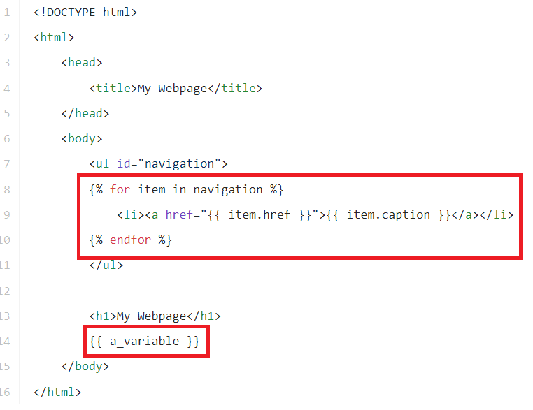
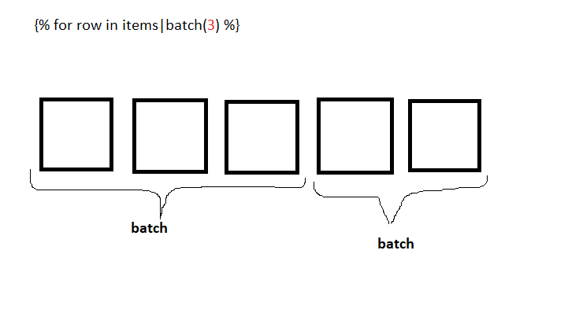
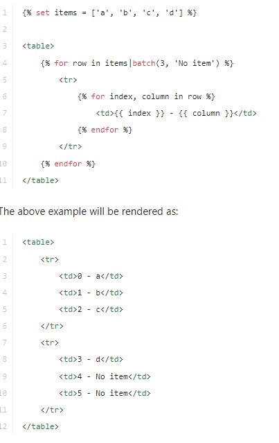

tips and tricks
-
Using double-quoted or single-quoted strings has no impact on
performance but string interpolation is only supported in
double-quoted strings.
- Operators (and, or, not) are case sensitive.
-
you can iterate over objects using:
{% set sizes = {
xs: 34,
s: 36,
m: 38,
l: 40,
xl: 42,
} %}
{% for k, v in sizes|filter(v => v > 38) -%}
{{ k }} = {{ v }}
{% endfor %}
{# output l = 40 xl = 42 #}
this example is from the
fliter docs
-
number to string/text
{# twelve point three four five #}
{{ '12.345'|format_number(style='spellout') }}
-
you can add a second paramter to the
join() filter that will be used to
seperate between the last two items
{{ [1, 2, 3]|join(', ', ' and ') }}
{# outputs 1, 2 and 3 #}
-
If you want to ensure that some values are defined in a
mapping (by given default values), reverse the two elements in
the call:
{% set items = {'apple': 'fruit', 'orange': 'fruit'} %}
{% set items = {'apple': 'unknown'}|merge(items) %}
{# items now contains {'apple': 'fruit', 'orange': 'fruit'} #}
variables
-
code execution
there are two types of brackets to execute code:
-
{% .... %}: used to execute
statements such as for-loops and if statements
-
{{ .... }}: used to output the
result of an expression or display a variable's value.
the second set of {} are the print statement so it's like
typing js inside of ` ` you first open {} to let the editor
know there's a code to be compiled/evaluated then you either
open % % or {} depeneding on what're about to do

-
you can display a proberty of an object
{{ car.color }} or you can use
{{ car['color'] }}
-
dynamic attributes (properties)
you can use
{{ attribute(yourObj, yourDynamicAttribute) }}
it's also used to access attributes with special characters
like
{{ attribute(yourObj, 'your-special-attribute') }}
Global Variables
-
_self: references the current template
name
-
_context: references the current context
-
_charset: references the current charset
setting variables
{% set foo = 'foo' %}
{% set foo = [1, 2] %}
{% set foo = {'foo': 'bar'} %}
filters
batch
let's say you have a long array of products and you want to put
them in the home page in a form of rows with every row
containing 3 items

full code in the docs and the image below

so in case of the code that is writtin in the painted figure
(the first image) it will return 2 rows with one containing 3
items and the other containing only 2
but in case of the code in the above image when you add a second
paramater it fills the empty items with that paramater
note that there's also a third paramater but you better check it
from the docs
column
iterates through array of objects returning the value of the
entered key
{% set items = [{ 'fruit' : 'apple'}, {'fruit' : 'orange' }] %}
{% set fruits = items|column('fruit') %}
{# fruits now contains ['apple', 'orange'] #}
escaping (skipping/disable) automatic scape
{% autoescape 'html' %}
{{ var|escape(strategy)|raw }} {# won't be double-escaped #}
{% endautoescape %}
that code was used in the
escape
documentation while explaining that using a variable as the
escaping startegy inside of
autoescape while result in double escaping
so if you do use the variable you should skip the auotescaping for
that line to avoid double escaping
html to markdown
{% apply html_to_markdown %}
Hello!
{% endapply %}
{{ include('some_template.html.twig')|html_to_markdown }}
json encode
the json_encode filter returns the JSON representation of a value:
{{ data|json_encode() }}
keys
The keys filter returns the keys of a sequence or a mapping. It is
useful when you want to iterate over the keys of a sequence or a
mapping:
{% for key in [1, 2, 3, 4]|keys %}
{{ key }}
{% endfor %}
{# outputs: 1 2 3 4 #}
{% for key in {a: 'a_value', b: 'b_value'}|keys %}
{{ key }}
{% endfor %}
{# outputs: a b #}
map
The map filter applies an arrow function to the elements of a
sequence or a mapping. The arrow function receives the value of
the sequence or mapping:
{% set people = [
{first: "Bob", last: "Smith"},
{first: "Alice", last: "Dupond"},
] %}
{{ people|map(p => "#{p.first} #{p.last}")|join(', ') }}
{# outputs Bob Smith, Alice Dupond #}
The arrow function also receives the key as a second argument:
{% set people = {
"Bob": "Smith",
"Alice": "Dupond",
} %}
{{ people|map((value, key) => "#{key} #{value}")|join(', ') }}
{# outputs Bob Smith, Alice Dupond #}
nl2br
The nl2br filter inserts HTML line breaks before all newlines in a
string:
{{ "I like Twig.\nYou will like it too."|nl2br }}
{# outputs
I like Twig.
You will like it too.
#}
raw
The raw filter marks the value as being "safe", which means that
in an environment with automatic escaping enabled this variable
will not be escaped if raw is the last filter applied to it:
{% autoescape %}
{{ var|raw }} {# var won't be escaped #}
{% endautoescape %}
reduce
The reduce filter iteratively reduces a sequence or a mapping to a
single value using an arrow function, so as to reduce it to a
single value. The arrow function receives the return value of the
previous iteration and the current value and key of the sequence
or mapping:
{% set numbers = [1, 2, 3] %}
{{ numbers|reduce((carry, v, k) => carry + v * k) }}
{# output 8 #}
The reduce filter takes an initial value as a second argument:
{{ numbers|reduce((carry, v, k) => carry + v * k, 10) }}
{# output 18 #}
replace
The replace filter replaces placeholders in a string (the
placeholder format is free-form):
{{ "I like %this% and %that%."|replace({'%this%': fruit, '%that%': "oranges"}) }}
{# if the "fruit" variable is set to "apples", #}
{# it outputs "I like apples and oranges" #}
{# using % as a delimiter is purely conventional and optional #}
{{ "I like this and --that--."|replace({'this': fruit, '--that--': "oranges"}) }}
{# outputs "I like apples and oranges" #}
slug
The slug filter transforms a given string into another string that
only includes safe ASCII characters.
{{ 'Wôrķšƥáçè ~~sèťtïñğš~~'|slug }}
Workspace-settings
The default separator between words is a dash (-), but you can
define a selector of your choice by passing it as an argument:
{{ 'Wôrķšƥáçè ~~sèťtïñğš~~'|slug('/') }}
Workspace/settings
The slugger automatically detects the language of the original
string, but you can also specify it explicitly using the second
argument:
{{ '...'|slug('-', 'ko') }}
it requires an extension to work so check the
docs
striptags
The striptags filter strips SGML/XML tags and replaces adjacent
whitespace characters by one space:
{{ some_html|striptags }}
You can also provide tags which should not be stripped:
{ some_html|striptags('<br><p>') }}
url_encode
The url_encode filter percent encodes a given string as URL
segment or a mapping as query string:
{{ "path-seg*ment"|url_encode }}
{# outputs "path-seg%2Ament" #}
{{ "string with spaces"|url_encode }}
{# outputs "string%20with%20spaces" #}
{{ {'param': 'value', 'foo': 'bar'}|url_encode }}
{# outputs "param=value&foo=bar" #}
[function] block
it can be used to make templates with replacable chunks of
content, these chunks can be replaced by the child
there're couple forms of syntax
{% block title %}{% endblock %}
block is the keyword while title can be
any word like docTitle or whatever you want
anything between the {...} {...} can be
replaced by the child (or used and another content added to it)
more details in the extend explaination
another form may be
<h1>{{ block('title') }}</h1>
Use the defined test to check if a block exists in the context of
the current template:
{% if block("footer") is defined %}
...
{% endif %}
{% if block("footer", "common_blocks.twig") is defined %}
...
{% endif %}